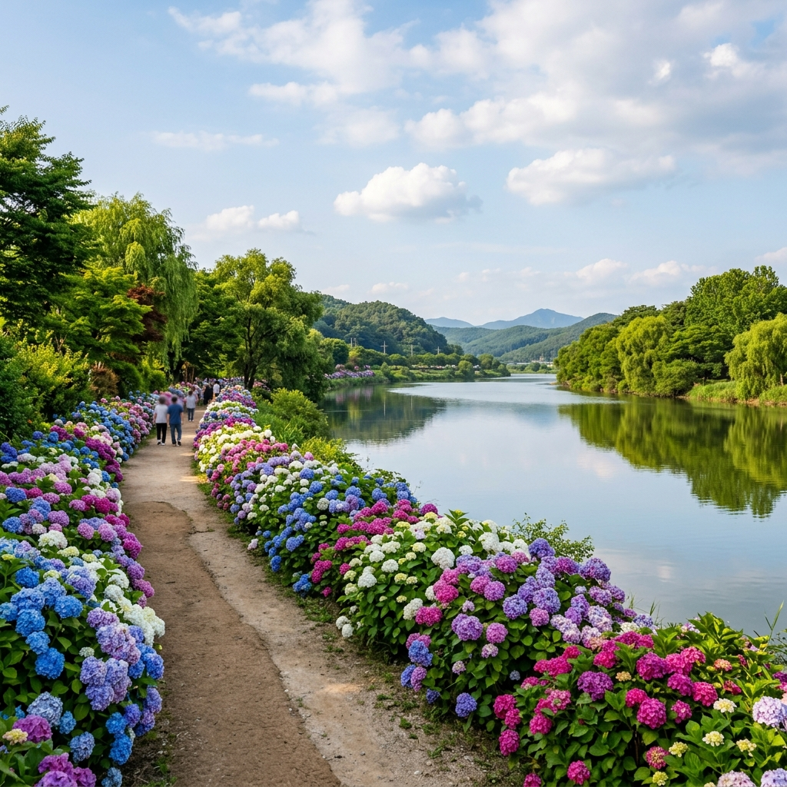
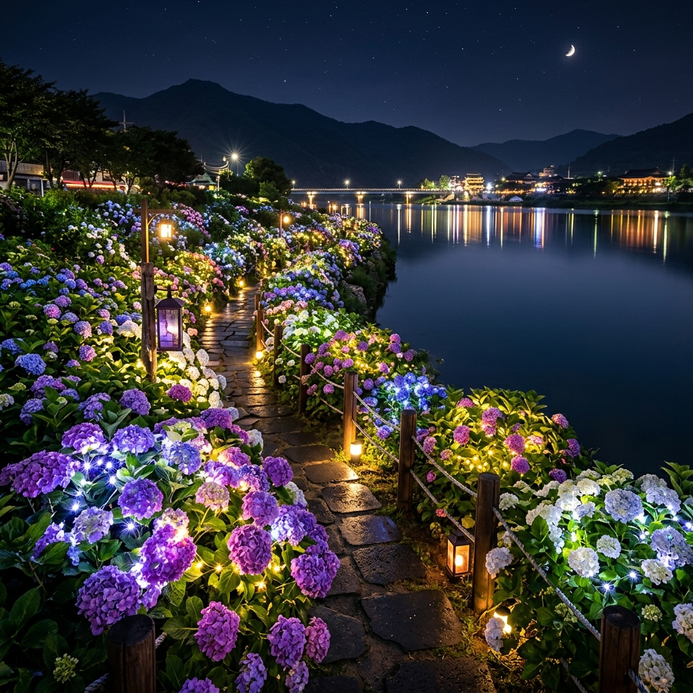
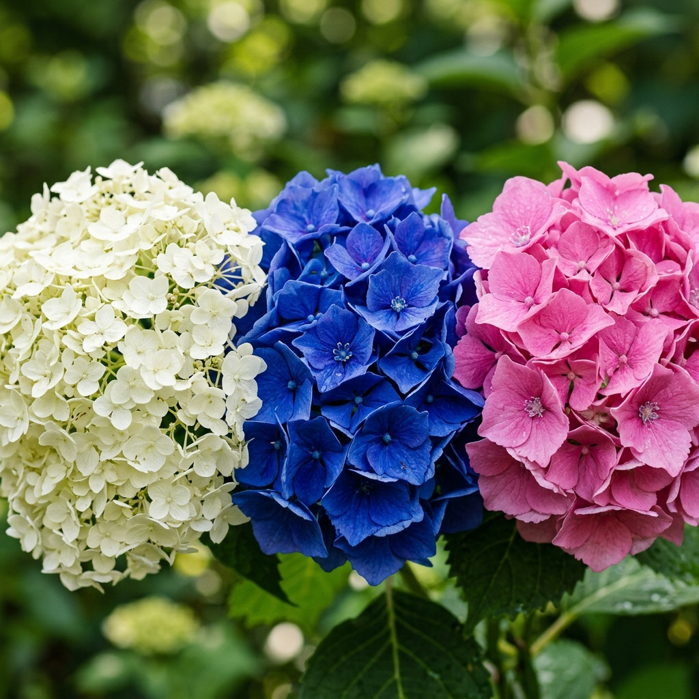

공주 유구색동수국정원 2026: 충청권 최대 수국 명소 무료 입장 & 유구천변 힐링 산책 완벽 가이드
알고 있는가, 입장료 한 푼 없이 충청권 최대 수국 군락을 만날 수 있는 곳을. 공주 유구색동수국정원은 충청남도 공주시 유구읍 유구천변에 조성된 수국 특화 생태 정원으로, 매년 6~7월이면 형형색색 수국이 천변 2km 구간을 가득 메운다. 2026년 공식 축제는 6월 27일~29일 3일간 열리지만, 정원 자체는 24시간 개방되므로 축제 전후로도 얼마든지 수국을 감상할 수 있다. 서울에서 1시간 40분, 대전에서 50분 거리의 이 아늑한 충남 마을이 매년 6월 전국 수국 성지 중 하나로 이름을 올리는 이유를 지금 낱낱이 파헤친다.
🌿 유구색동수국정원이란? — 이름 속에 숨겨진 스토리
'색동'이라는 이름은 수국의 다채로운 색깔에서 왔다. 유구천변을 따라 심어진 수국은 흰색·분홍·연보라·진보라·청색까지 5가지 이상의 색을 동시에 선보여 마치 한복의 색동저고리를 펼쳐놓은 듯한 장관을 연출한다. 단순히 한 가지 색의 꽃밭이 아니라 색의 그라데이션을 자연 속에서 감상할 수 있다는 점이 다른 수국 명소와 차별화되는 핵심이다.
정원이 자리한 유구읍은 섬유·직물 산업으로 유명한 소도시다. 1960~70년대 전국 원단 납품의 중심지였던 유구는 지금도 '원단의 도시'로 불리며, 이 역사적 배경과 색동수국이라는 이름이 묘하게 어우러진다. 정원 근처 유구전통시장에서는 지금도 원단과 섬유 관련 점포들이 운영 중이어서, 수국 산책 후 시장 구경을 더하면 색다른 여행 경험이 완성된다.
조성 규모는 2만 5천여 주 이상의 수국이 유구천 양안에 심어져 있으며, 공주시가 지속적으로 수량을 늘리고 있다. 쉽게 말해 하천을 따라 걷는 내내 수국 터널 속을 걷는 셈이다.

공주 유구천변 색동수국정원 전경 / AI 제작 이미지
📅 2026년 유구색동수국 축제 공식 일정 & 운영 정보
| 항목 |
내용 |
| 축제 기간 |
2026년 6월 27일(토) ~ 6월 29일(월) |
| 운영 시간 |
11:00 ~ 22:00 (야간 조명 점등 포함) |
| 입장료 |
무료 (24시간 상시 개방) |
| 위치 |
충청남도 공주시 유구읍 창말길 44 일대 |
| 주차 |
유구중학교 앞 공영주차장 (무료) |
| 주관 |
공주시청 문화관광과 (041-840-2544) |
축제 기간 외에도 6월 중순부터 7월 초까지 수국이 피어 있으며, 야간 조명 점등은 축제 기간 한정으로 진행된다. 낮에 보는 수국과 밤에 조명 아래 빛나는 수국의 분위기가 전혀 달라, 여유가 된다면 낮과 밤 모두 방문해볼 것을 추천한다.
🚶 유구천변 산책 코스 — 발 닿는 곳마다 수국
유구색동수국정원의 핵심 매력은 '걷는 즐거움'이다. 유구천 양안을 따라 총 약 2km 구간에 수국이 조성되어 있으며, 천변 데크 산책로와 흙길 산책로가 번갈아 나타난다. 전 구간을 왕복 걸으면 40~60분 소요된다.
[산책 코스 상세]
① 시작 지점: 유구중학교 앞 공영주차장 → 하천변 진입로
진입 직후부터 양쪽으로 수국 군락이 펼쳐진다. 이른 아침에는 하천 수면에서 피어오르는 물안개와 수국이 만나 환상적인 분위기를 연출한다.
② 중간 지점 (색동교 일대): 유구천을 가로지르는 색동교 위에서는 천변 전체 수국 군락을 파노라마로 조망할 수 있다. 인생샷 포토존 1번지다.
③ 상류 방향: 색동교를 지나 상류로 걸으면 수국 밀도가 더 높아지는 구간이 나타난다. 이 구간은 조용한 주택가와 인접해 있어 현지인 느낌이 물씬 난다.
④ 환경 특이점: 유구천변 수국은 대부분 1~1.5m 높이의 큰 수국으로, 걷는 사람보다 꽃 키가 큰 경우도 있다. 마치 수국 터널 속을 걷는 것 같은 몰입감이 최대 강점이다.
💡 현지 꿀팁: 유구중학교 주차장은 협소하다. 주말 오전 10시 이후에는 만차가 되는 경우가 있으니 대중교통 이용 시 유구버스터미널(공주→유구 직행 버스 약 40분, 시외버스 하루 수 편 운행)을 이용하거나, 터미널 인근 유료주차장을 활용하자.
🌙 야간 수국 조명 행사 — 낮과 다른 몽환적 세계
2026년 축제 기간 중 특별 야간 조명 점등 행사가 열린다. 22:00까지 운영되며, 수국 군락 사이사이에 설치된 포인트 조명이 꽃의 색을 극대화한다.
파란 계열의 조명은 청보라 수국과 어울려 신비로운 분위기를, 따뜻한 노란·오렌지 조명은 분홍·흰색 수국과 결합해 로맨틱한 무드를 만들어낸다. 특히 유구천 수면에 조명이 반사되는 모습은 낮 산책과는 전혀 다른 감동을 전한다.
야간 방문 시 주의사항
- 하천변 데크 일부 구간에 미끄러운 이끼가 있으므로 미끄럼 방지 신발 권장
- 조명 점등 시간대(일몰 후 약 21:00~22:00)에 인파가 가장 집중
- 촬영 시 삼각대는 통로 중간 설치 자제 (다른 방문객 배려)

야간 조명 아래 수국 / AI 제작 이미지
🍜 유구읍 맛집 & 주변 관광지 — 알찬 1일 코스 설계
공주 유구는 수국 외에도 즐길 거리가 많다. 반나절 수국 산책 후 연계할 수 있는 코스를 소개한다.
[점심] 유구전통시장 내 국밥 타운
유구시장은 5일장(2일·7일)을 기반으로 한 전통시장이다. 시장 내 국밥 골목에서 순대국밥·돼지국밥이 7,000~8,000원에 제공된다. 시장 특유의 소박한 인심과 함께 현지 식재료로 만든 음식을 맛볼 수 있다.
[오후] 유구 섬유·원단 아울렛
전국 최대의 섬유 산지 유구답게, 시장 주변에는 원단 아울렛이 즐비하다. 여름 천연 소재 원단을 시중의 절반 이하 가격에 구매할 수 있어 재봉·수공예를 즐기는 방문객에게는 특별한 쇼핑 명소가 된다.
[이동] 공주 도심 연계 코스 (30분 거리)
유구에서 공주 시내까지 약 30km다. 백제 역사 유산의 보고 공산성(UNESCO 세계유산), 무령왕릉·왕릉원, 국립공주박물관을 묶어 역사 문화 당일 투어로 완성할 수 있다.
📍 찾아가는 방법 — 대중교통 & 자가용 완전 정리
자가용 이용
- 서울 출발: 경부고속도로 → 천안 논산고속도로 → 정안 IC 또는 공주 IC → 유구읍 방면 (약 1시간 40분)
- 대전 출발: 공주 방향 국도 36호 → 유구읍 (약 50분)
- 내비게이션 검색: "공주 유구색동수국정원" 또는 "충남 공주시 유구읍 창말길 44"
대중교통 이용
- 서울 센트럴시티 고속터미널 → 공주 고속버스터미널 (약 1시간 30분)
- 공주 고속버스터미널 → 유구버스터미널 (시외버스 약 40분, 하루 수 편)
- 유구버스터미널에서 수국정원까지 도보 약 10분
⚠️ 주의: 축제 기간(6월 27~29일) 주말에는 유구 일대 주차장이 조기 만차될 수 있다. 공주시에서 임시 셔틀버스를 운행하는지 사전에 공주시청 또는 공주 문화관광 공식 홈페이지에서 확인하자.
🌸 유구 수국의 색이 다채로운 이유 — 식물학적 분석
유구색동수국정원의 이름처럼 여러 색깔 수국이 한 공간에 공존하는 이유는 품종의 다양성에 있다. 공주시는 단일 품종이 아니라 '나데시코(白花)', '아나벨(흰색 대형)', '아이오노스타이테(보라)', '오타쿠사(청색)' 등 복수의 품종을 혼식 조성했다.
수국 꽃의 색을 결정하는 주요 변수는 두 가지다. 첫째는 앞서 설명한 토양 산도(pH)이고, 둘째는 품종 자체의 고유 색 유전자다. 아나벨처럼 흰색 유전자가 지배적인 품종은 어떤 토양에서도 흰색을 유지하며, 반면 수국 중 가장 흔한 수국(Hydrangea macrophylla)계열은 pH에 따라 색이 극적으로 달라진다.
유구천변의 토양은 하천 충적토 특성상 부분적으로 pH 변동이 있어 같은 구간 내에서도 파란 수국 옆에 분홍 수국이 피는 경우가 생긴다. 이것이 '색동'이라는 이름의 자연과학적 근거다.

다양한 품종의 수국 클로즈업 비교 / AI 제작 이미지
📊 공주 유구 vs 타 지역 수국 명소 비교
| 명소 |
입장료 |
특징 |
야간 조명 |
| 공주 유구색동수국정원 |
무료 |
천변 산책로, 다색 수국, 소도시 분위기 |
축제 기간 (6/27~29) |
| 제주 혼인지 |
무료 |
전설적 연못, 짙은 청보라 |
없음 |
| 포천 허브아일랜드 |
10,000~12,000원 |
라벤더+수국, 야간 조명 상설 |
연중 상설 |
| 서울 선유도공원 |
무료 |
도심 근접, 한강 뷰 |
없음 |
✅ 총평: 공주 유구색동수국정원은 무료 입장 + 하천 산책 + 야간 조명이라는 3박자를 갖춘 충청권 최고의 가성비 수국 명소다. 입장료 없이 이 수준의 정원 경험을 할 수 있는 곳은 전국에서도 드물다.
🔍 방문 전 체크리스트 — 놓치면 후회하는 준비물
수국 명소 방문 시 챙겨야 할 것들을 정리한다.
- ✅ 편한 운동화: 하천변 흙길 구간 있음
- ✅ 모기 기피제: 하천 근처 여름 필수품
- ✅ 자외선 차단제 & 모자: 6~7월 직사광선 강함
- ✅ 보조배터리: 사진 촬영 배터리 소모 대비
- ✅ 물 500mL 이상: 매점 없는 구간 있음
- ✅ 야간 방문 시 손전등: 조명 없는 구간 대비
#공주수국
#유구색동수국정원
#충청수국명소
#무료수국
#공주여행
#수국축제2026
#유구천변산책
#6월여행지추천
#충남여행
#수국개화시기